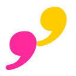

01 / 歌词 · 影视 · 文化
喜欢，所以想再懂一点。
把歌词或台词粘贴进来，理解词义、词尾和语气，让触动你的句子变得更清晰。
给中文母语者的韩语桌面助手
看懂一句韩语，留下自己的理解。
从查词、追问到表达和练习，
把零散的好奇，变成慢慢积累的能力。
지금 이 순간을
기억하고 싶어요.
I want to remember this moment.
麻烦确认一下这个文件。
이 파일을 확인해 주세요.
清楚、礼貌地提出请求。이 파일을 확인 부탁드립니다.
更郑重，适合工作消息或邮件。不止看译文，也理解语气和用法。
今天遇见的，留给明天的自己。
记住 · 从喜欢的句子里留下
想要做某事 · 试着写一句
功能交互示意 · 示例内容，不会发起 AI 请求
从遇见韩语，
到更懂韩语。
不只在上课时，才学韩语
那些让你停下来的一句话，
都可以成为下一次进步的起点。
01 / 歌词 · 影视 · 文化
把歌词或台词粘贴进来，理解词义、词尾和语气，让触动你的句子变得更清晰。
02 / 教材 · 阅读 · 日常
先查基础词典，再按需深入解析。在语跃的结果里选词追问，保留前后语境继续理解。
03 / 消息 · 邮件 · 工作
从中文或英文出发，比较韩语的不同说法，理解敬语和使用场景，慢慢找到表达的分寸。
一个顺手的学习闭环
不必让有用的解释，
散落在一个又一个对话窗口里。

快捷键呼出，词典和个人资料优先返回。复杂内容再请求 AI，核心含义先读，细节按需展开。
AI 结果可积累、修订、添加别名和标记。再次遇到相同内容时，优先复用已有解释。
把精选内容收入学习库，用标签、集合和笔记整理，再通过认识、听辨、写出、对话和造句练习巩固。
v0.24.2 · 跃仔来搭把手
一条轻轻出现的建议，接上一个实际有用的动作。
输入停顿后再提示，可关闭，也不反复打扰。
对照检查当前筛选，找到匹配证据后再调整。关键词保留，条件也能恢复。
检查筛选影响打开对应学习记录，或接着记一个易错点。不用再去列表里翻找。
打开这条学习记录定位相关服务的模型、凭据或连接设置。原句留在原处，由你决定是否重试。
定位相关服务设置以上帮助不额外调用 AI。花园与星河场景、跃仔微动和点击反馈均可在外观设置调整。
离线查词无需注册；不同本地账号分开管理资料。
需要 AI 时，由你选择服务；重要内容，随时备份。
让学习发生在当下
先从离线查词开始，
再慢慢建立自己的韩语学习空间。
Apple Silicon · M 系列芯片
带上离线词典、你的好奇心，和一点点想学会的心情。
前往 GitHub 下载腾讯CNB 加速下载程序包与版本说明可在下载页查看。
可以。内置基础词典支持离线查词和韩中英释义，个人资料整理也在本机进行。深入解析、AI 提问和部分练习反馈需要你配置可用的 AI 服务。
当前测试版无需注册云账号，也没有应用内订阅。首次启动会建立本地账号。你自行配置的 AI 服务可能产生费用，费用由对应服务收取。
可配置 DeepSeek、Ollama、oMLX，也支持供个人本机测试的 Codex 账号桥接。自行运行的本地模型需要另外安装和加载，不随应用提供。查询内容会发给你选择的服务，失败不会自动转发其他服务，AI 使用可能产生对应费用。
历史、个人资料和学习记录默认保存在本机，各本地账号分别管理。可在“设置 → 备份与恢复”导出备份，并在另一台电脑恢复为新本地账号；目前没有云端自动同步。
下载适合电脑的程序 ZIP：Mac 解压后将 LingoLeap 放入“应用程序”，Windows 解压后运行 LingoLeap.exe。后续在“设置 → 软件更新”检查并下载，完成后点击“重启并安装”，程序会自动替换并启动。手动替换前需完全退出旧版；v0.18.0 之前的版本需先安装新版一次。词典内容可单独更新。
不会。相关建议会等待输入停顿后出现，同类引导有去重和间隔。可关闭单次气泡、停用某类主动提示，或在“设置 → 外观 → 场景与跃仔”调整提示和动效。静态模式仍能使用帮助。